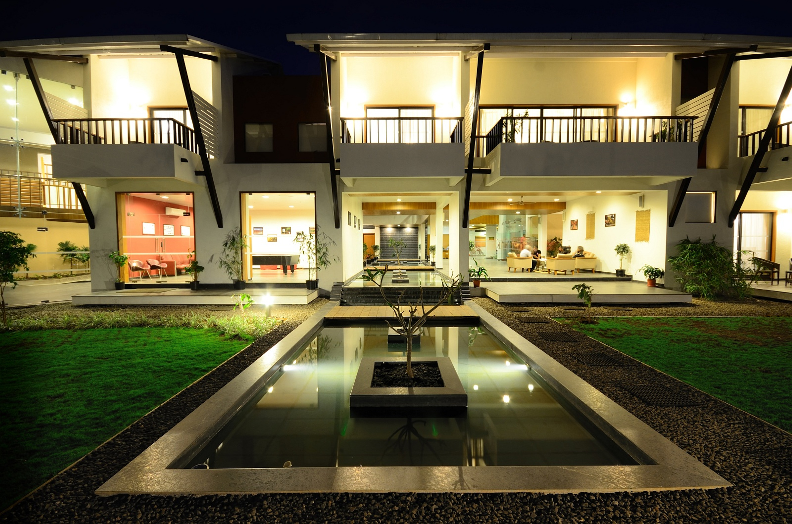
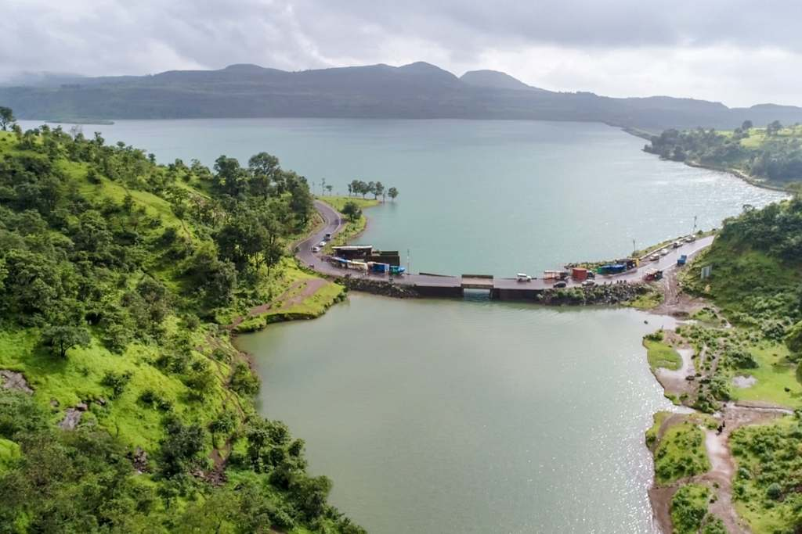
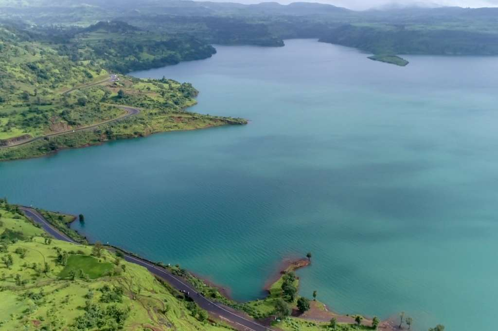
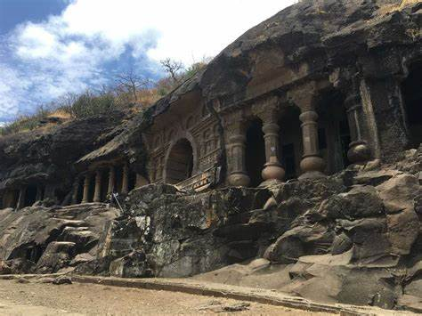
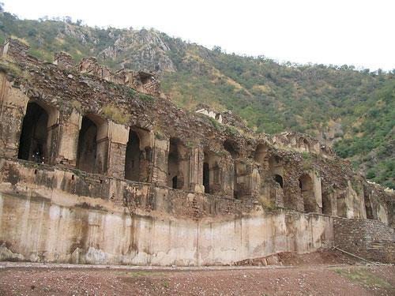

Sula Vineyards


Welcome to the heart of Sula, the very place our wines begin their journey from grape to your glass. India's leading producer of wines, Sula Vineyards is located amidst the rolling hills of Nashik overlooking the Gangapur Dam. A visit to our vineyards and winery is an enjoyable experience for people of all ages. Indulge in an exclusive, all-access tour of our winery followed by a wine tasting session. Unwind with a glass or two at The Tasting Room overlooking the vineyards with panoramic views of the Gangapur lake. Have lunch at one of our restaurants and stay back at the gorgeous ‘Source at Sula’, India’s first heritage winery resort, with a Tuscan twist or 'Beyond by Sula' that houses a world-class infinity pool -- it’s the perfect weekend getaway with your loved ones!
Bhavli Waterfall



Bhavli Waterfall is located near Bhavli Dam, is an earth fill dam on Bham river near Igatpuri, Nashik district in the state of Maharashtra in India. Bhavli Dam is located near village Bhavali on Darana river tributary of Godavari river.
Pandav Leni


These caves are located on hill at the outskirts of Nashik city on Nashik Mumbai road (NH3) Dadasaheb Phalke smarak is erected at the foots of this hill. These caves are built on the Trirasmi hill about 3004 feet above the sea. These caves are the group of old Buddhist caves (B.C.250- A.D.600). Their northern frontage saves them from the sun and the south-west rains hence much of the carved work and many long and most valuable inscriptions have passed fresh amd unharmed through 1500-2000 years.. All the caves are great examples of intricate carving and craftsmanship but the 3, 10, 18 caves are a must see for their outstanding sculptures. Most of the caves have the magnificent idols of Buddha and or the popular Jain Teerthankaras. The caves had an excellent arrangement for water, with skillfully chiseled water tanks, exquisitely carved into the rocks.